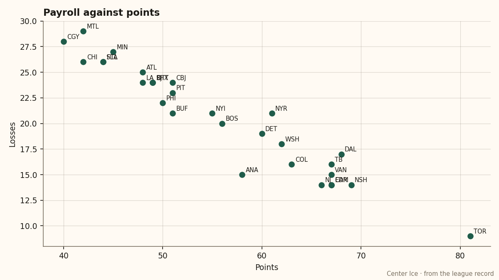

What the Gate Buys: LA profits $15.41M from the league's worst building
The live sum of four active facility tracks reads -19. No club in the league is lower, and the money does not care.
 Ruth HalloranBusiness of hockey · The Building
Ruth HalloranBusiness of hockey · The Building
 Los Angeles Kings carries the worst building in the league by the only metric the tuning file reads. The live sum of its four active facility tracks is -19. No other club falls below -18. Travel sits at level 0, the floor, worth -6 on every attribute when a player is on the road. The workout room is also at 0, worth -5 on strength, checking and endurance. Practice and equipment each hold one level above the bottom, at -4 apiece.
Los Angeles Kings carries the worst building in the league by the only metric the tuning file reads. The live sum of its four active facility tracks is -19. No other club falls below -18. Travel sits at level 0, the floor, worth -6 on every attribute when a player is on the road. The workout room is also at 0, worth -5 on strength, checking and endurance. Practice and equipment each hold one level above the bottom, at -4 apiece.
Los Angeles Kings spent $48.73M this season, holds 48 points through 51 games, and still clears $15.41M in profit on revenue of $53.20M. The building costs the club nothing it has to show for on the balance sheet. General manager Hames McKenna runs a franchise whose gate covers its payroll and its worst-in-the-league facility gap in the same column.
What the live sum does and does not tell you
The tuning file carries ten tracks. Six do nothing here or carry numbers nothing in this pipeline reads: coaching, medical, marketing and legal are switched off entirely, and the locker room and scouting rooms hold curves no reader outside a club can see. The live sum adds the four tracks that move a rating and is the only building number this league produces.

Five clubs one level up hurt their own men more
The raw -19 is the least interesting fact about this building. Five of the six clubs clustered one level up carry a worse facilities effect on their own players' ratings than Los Angeles Kings does.  Edmonton Oilers sits at -18 and its on-ice term reads -3.65.
Edmonton Oilers sits at -18 and its on-ice term reads -3.65.  Columbus Blue Jackets is at -18 and reads -3.63.
Columbus Blue Jackets is at -18 and reads -3.63.  Mighty Ducks of Anaheim is at -18 and reads -3.61.
Mighty Ducks of Anaheim is at -18 and reads -3.61.  Florida Panthers is at -18 and reads -3.53.
Florida Panthers is at -18 and reads -3.53.  Boston Bruins sits at -16 and reads -3.56. Los Angeles Kings reads -2.65.
Boston Bruins sits at -16 and reads -3.56. Los Angeles Kings reads -2.65.
The live sum counts all four tracks equally. The rating model does not weight them equally across the attribute groups each track touches. Los Angeles Kings carries the absolute floor on travel and workout, but its practice rink holds one level of partial credit over the bottom, and the practice modifier applies at home, where a club plays roughly half its schedule. A club at the floor on practice, like Edmonton Oilers, takes a -6 through every home night. That asymmetry pulls Los Angeles Kings's averaged facilities term above clubs whose buildings score better by the raw count.
The Los Angeles Kings record at home reads 11-13. On the road it reads 10-17. The club takes a -4 from practice at home and a -6 from travel away. The gap between those two modifiers tracks with the gap between those two records.
The seat costs $78 and the profit line does not care
Los Angeles Kings draws a season average of 13,659 at $78 a ticket. Revenue comes in at $53.20M against a payroll of $48.73M. The club scores 169 and allows 186.
All seven clubs at the bottom of the building table, by the live sum:
| club | live sum | travel | on the ice | pts | payroll | profit |
|---|---|---|---|---|---|---|
| Los Angeles Kings | -19 | 0 | -2.65 | 48 | $48.73M | $15.41M |
| Mighty Ducks of Anaheim | -18 | 1 | -3.61 | 58 | $41.01M | $27.32M |
| Columbus Blue Jackets | -18 | 1 | -3.63 | 51 | $49.21M | $13.15M |
| Edmonton Oilers | -18 | 2 | -3.65 | 67 | $36.81M | $26.97M |
| Florida Panthers | -18 | 3 | -3.53 | 44 | $51.07M | $13.94M |
 Minnesota Wild Minnesota Wild | -18 | 0 | -3.41 | 45 | $29.97M | $35.64M |
 St. Louis Blues St. Louis Blues | -18 | 1 | -2.50 | 44 | $56.63M | $14.18M |
Minnesota Wild carries the same building band as Los Angeles Kings on a payroll of $29.97M and clears $35.64M, the highest profit in the league. Edmonton Oilers carries -18 on $36.81M and has 67 points at $0.55M per point, the second-best efficiency in the league. Mighty Ducks of Anaheim carries -18 on $41.01M and has 58 points at $0.71M per point.
Los Angeles Kings spends more than all three, carries the worst raw building in the league, and produces fewer points than two of them. The building is part of that gap. The payroll allocation is the rest. Neither number lands in a column the gate reads.